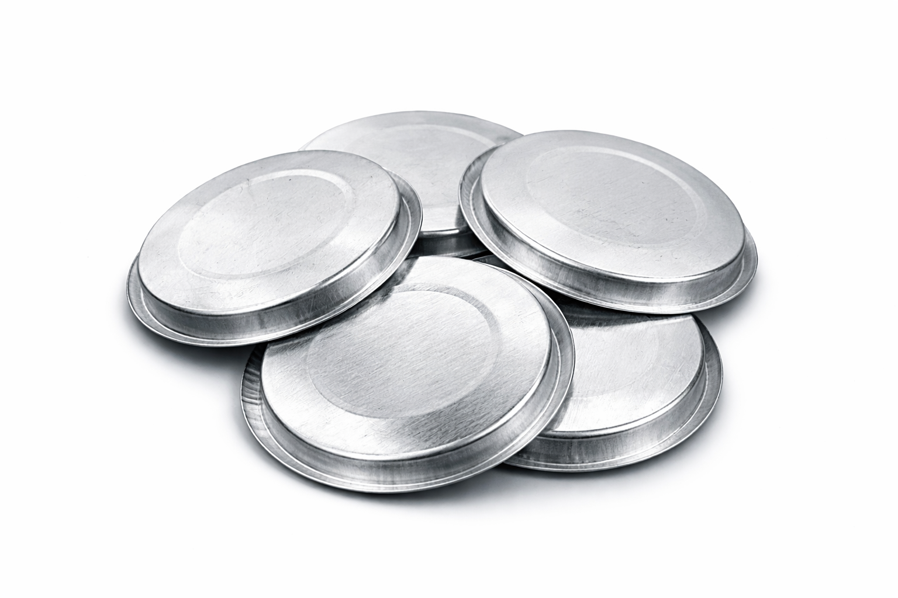

About ESWAR COTTAGE INDUSTRIES

ESWAR COTTAGE INDUSTRIES is a specialized manufacturing unit producing
high-quality tin caps, metal lids and sealing components for food, ghee,
incense (sambrani), pharmaceutical and household packaging.
Our products ensure strong sealing, long shelf life and premium presentation.

We manufacture tin lids, aluminum seals and custom-sized caps using
precision machinery and quality-grade metals.
Every piece is designed for durability, hygiene and perfect fit.

Our tin packaging supports ghee, oil, pooja items and food containers.
These caps protect freshness while giving a clean and professional finish.

From small cottage businesses to growing brands,
we supply affordable and reliable tin packaging that helps products look premium.

Our vision is to become a trusted name in tin cap manufacturing across India,
delivering consistent quality, timely supply and customer satisfaction.